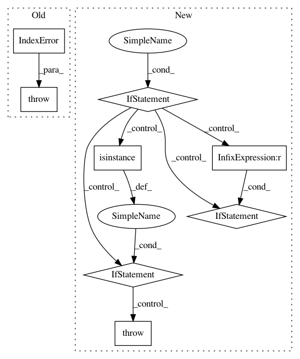

d5f74cc30a8f0a192d5ef8818c6d72c3707c4a97,nussl/audio_signal.py,AudioSignal,load_audio_from_file,#AudioSignal#Any#Any#Any#,287
Before Change
if signal_length is not None and signal_starting_position >= signal_length:
raise IndexError("signal_starting_position cannot be greater than signal_length!")
try:
with audioread.audio_open(os.path.realpath(input_file_path)) as input_file:
self.sample_rate = input_file.samplerate
After Change
with audioread.audio_open(os.path.realpath(input_file_path)) as input_file:
file_length = input_file.duration
if offset > file_length:
raise ValueError("offset is longer than signal!")
if duration is not None and offset + duration >= file_length:
warnings.warn("offset + duration are longer than the signal. Reading until end of signal...",
UserWarning)
audio_input, self.sample_rate = librosa.load(input_file_path,
sr=None,
offset=offset,
duration=duration,
mono=False)
// Change from fixed point to floating point
if not np.issubdtype(audio_input.dtype, float):
audio_input = audio_input.astype("float") / (np.iinfo(audio_input.dtype).max + 1.0)
self.audio_data = audio_input
except Exception as e:
if isinstance(e, ValueError): // This is the error we just raise, re-raise it
raise e
else:
raise IOError("Cannot read from file, {file}".format(file=input_file_path))
self.path_to_input_file = input_file_path
self.set_active_region_to_default()
def load_audio_from_array(self, signal, sample_rate=constants.DEFAULT_SAMPLE_RATE):
In pattern: SUPERPATTERN
Frequency: 3
Non-data size: 8
Instances
Project Name: interactiveaudiolab/nussl
Commit Name: d5f74cc30a8f0a192d5ef8818c6d72c3707c4a97
Time: 2017-02-04
Author: ethanmanilow@gmail.com
File Name: nussl/audio_signal.py
Class Name: AudioSignal
Method Name: load_audio_from_file
Project Name: interactiveaudiolab/nussl
Commit Name: efc54499191ead69f875877badd3578c60eba7a6
Time: 2017-02-08
Author: ethanmanilow@gmail.com
File Name: nussl/audio_signal.py
Class Name: AudioSignal
Method Name: load_audio_from_file
Project Name: prody/ProDy
Commit Name: fa926b8278a3b635d929e0fe6c63ac2a8983a406
Time: 2012-12-15
Author: lordnapi@gmail.com
File Name: lib/prody/dynamics/nma.py
Class Name: NMA
Method Name: __getitem__